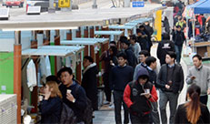
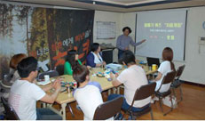

유틸메뉴
주메뉴
행복한 변화, 사람사는 동작
생활의 활력을 불어넣는
아름다운도시로 만들겠습니다.
탭메뉴
-
 컵밥거리 ‘밥그릇 싸움’ 사라지다
이창우 구청장은 “앞으로도 노량진 거리 가게 특화거리가 지속적으로 위생적이고 안전한 서울의 명물 거리로 자리잡기를 기대한다”고 말했다.
-
 동작구·청년단체, 노량진 중심 청년들...
이창우 동작구청장은 “과도한 부채로 청년들 이 미래를 제대로 설계할 수 없다면 사회가 나서서 해결해야 할 문제”라며 “많은 청년들이 부채의 굴레를 벗어나 꿈과 희망을 품었으...
-
원탁의 주민들, 동작의 미래 위해 ‘거침...
구청장은 “주민들의 좋은 아이디어는 내년 정 책에 반영하는 등 임기 후반기 구정에 참고하 겠다”면서 “현재 수립 중인 ‘30년을 바라보는 동작구 종합도시발전계획’에도 구민 의견...
-
CCTV 달고 양심거울 붙여도… 앞집 사람..
한 지자체 관계자는 “자칫 중국 동포들에 대한 잘못된 선입견을 조성할 수 있는 만큼 (중국 동 포들이 쓰레기 종량제 문화에 적극 호응하도록) 다각도의 대안을 찾고 있다”고 밝혔다.

대표전화: 02-820-1114 (120 다산콜센터로 연결) 02-820-1119 (야간, 공휴일 당직실)
Copyright 2011 Dongjak-gu Office.ALL Rights reserved.